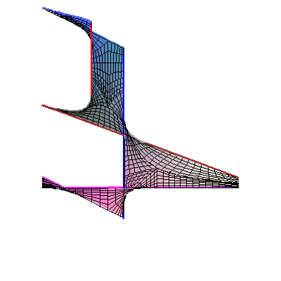

Higher convexity of coamoeba complementsMounir Nisse and Frank Sottile. |
| We show that the complement of the closure of the coamoeba of a variety of codimension k+1 is k-convex, in the sense of Gromov and Henriques. This generalizes a result of Nisse for hypersurface coamoebas. We use this to show that the complement of the nonarchimedean coamoeba of a variety of codimension k+1 is k-convex |
|  |